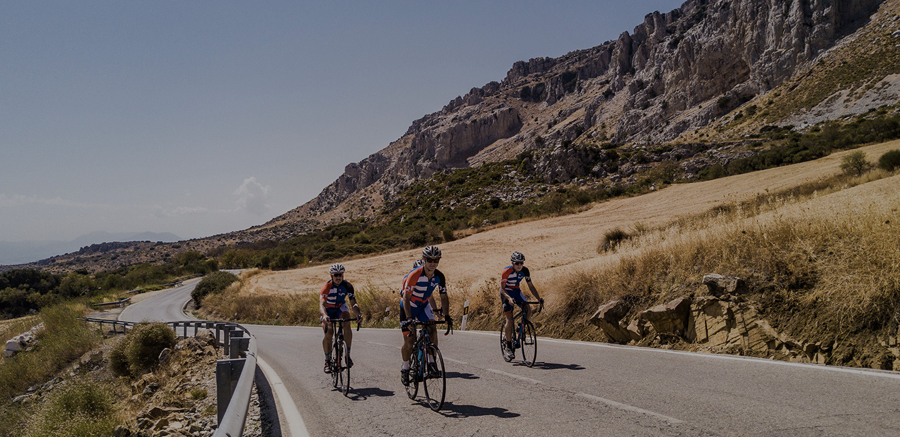
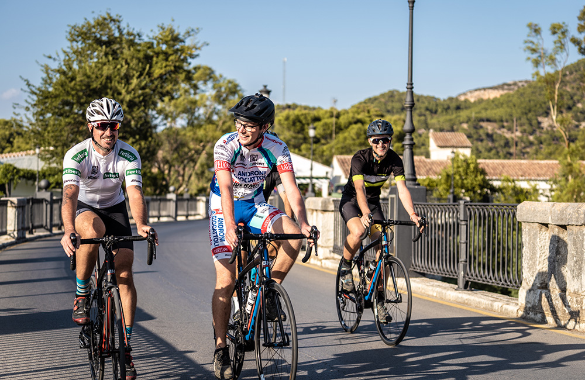
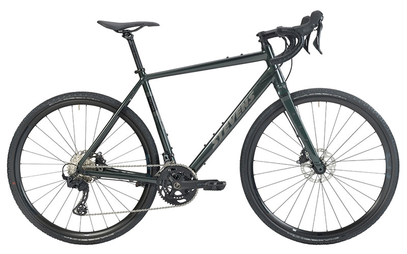
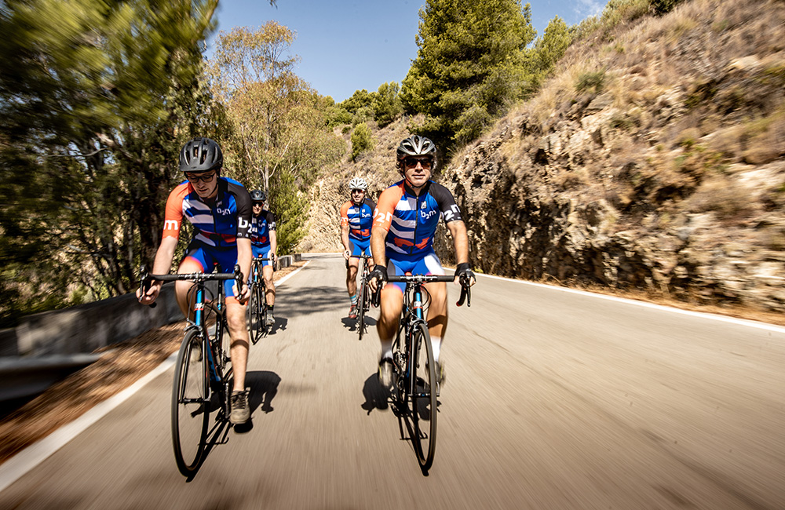

Alquiler de bicicletas
Bicicletas de carretera, gravel, eléctricas, trekking y montaña de alta gama. Modelos actualizados de las mejores marcas.
Ver catálogo
Bicicletas de carretera, gravel, eléctricas, MTB y trekking de las mejores marcas. Tours guiados, rutas exclusivas y taller integral. Abiertos todos los días en el centro de Málaga.

Trabajamos desde Málaga para ciclistas de todas las partes del mundo. La más amplia selección de bicicletas de carretera, MTB, híbridas y e-bikes, disponibles para alquiler en el centro de la ciudad.
Marcas como BMC, Wilier, Stevens, Riese & Muller y Radon, siempre actualizadas y en perfecto estado mecánico.
Alquiler de bicicletas premium, tours guiados por profesionales, rutas exclusivas y un taller con los mejores técnicos de Málaga y Costa del Sol.
Bicicletas de carretera, gravel, eléctricas, trekking y montaña de alta gama. Modelos actualizados de las mejores marcas.
Ver catálogoTours en bicicleta de carretera, mountain bike y e-bike. Distintos niveles de dificultad, guías profesionales y paisajes inolvidables.
Ver toursRutas personales para descubrir Málaga, la Costa del Sol y Andalucía a tu propio ritmo. Carretera, MTB y mas.
Ver rutasReparaciones y mantenimiento del más alto nivel para tu bicicleta, por los mejores técnicos de Málaga. Sistemas Bosch incluidos.
Ver tallerLlevamos tu bicicleta directamente a tu hotel, apartamento e incluso al aeropuerto de Málaga. Sin complicaciones.
Más infoCascos, candados, pedales SPD/Look, bidones y todo el material que necesitas para tu salida ciclista.
Ver equipamientoProbablemente el mejor sitio de alquiler de bicicletas en Málaga ciudad. Gente amable, buen ambiente, precios justos y bicicletas estupendas.
BMC, Wilier, Stevens, Riese & Muller, Radon. Modelos actualizados cada temporada, siempre en perfecto estado mecánico.




Tours exclusivos en bicicleta de carretera, mountain bike y e-bike con guías profesionales. Desde paseos urbanos por Málaga hasta rutas por los Montes de Málaga y los mejores puertos de montaña de Andalucía.
Cada tour incluye acompañamiento profesional, seguro de responsabilidad civil y todo el soporte técnico que necesites.
4,9 sobre 5 en TripAdvisor con 769 opiniones verificadas.
Alquilamos cinco Wilier GTR Team Disc 105 para 6 dias. Las bicicletas eran fantasticas y superaron las expectativas. bike2malaga mantiene claramente sus bicicletas bien, ya que eran un placer para pedalear. Servicio excelente con entrega y recogida en el hotel.
Ya es la quinta vez que uso bike2malaga. Otra gran experiencia. Las bicicletas, una de trekking y una e-bike, estaban en excelente estado. La atención del equipo, tanto administrativa como en las explicaciones técnicas, fue muy útil.
Dos e-bikes alquiladas por 63 euros en total. Todo listo a las 9:30 de la mañana con cascos y candados. Pasamos un día fantástico explorando la costa. Bicicletas brillantes y un servicio de primera.
Sí. Recomendamos reservar con antelación, especialmente entre marzo y noviembre. Así garantizas el modelo y la talla que necesitas.
Sí. Llevamos y recogemos las bicicletas en tu hotel, apartamento e incluso en el aeropuerto de Málaga.
Sí. Se realiza un bloqueo de 300 euros por bicicleta en tu tarjeta de crédito durante el periodo de alquiler. Se libera al devolver el equipo en buen estado.
Estamos en la Calle Hoyo de Esparteros 9, 29005 Málaga, en pleno centro de la ciudad. Abiertos todos los días de 9 a 17 h.
Sí. Ofrecemos tours guiados en bicicleta de carretera, mountain bike y bicicleta electrica, con distintos niveles de dificultad. Consulta la página de Tours para más información.
Sí, abrimos todos los días del año de 9 a 17 h. Solo cerramos el 25 de diciembre y el 1 de enero.
Estamos en pleno centro de Málaga, a pocos metros de la Calle Larios. Abiertos todos los días del año.